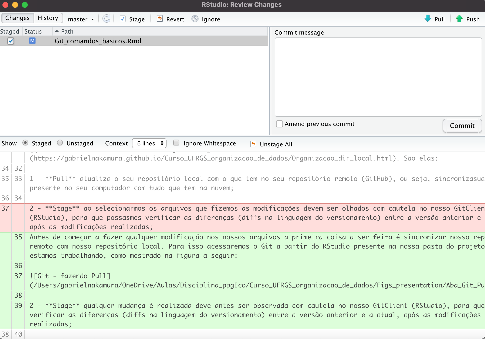
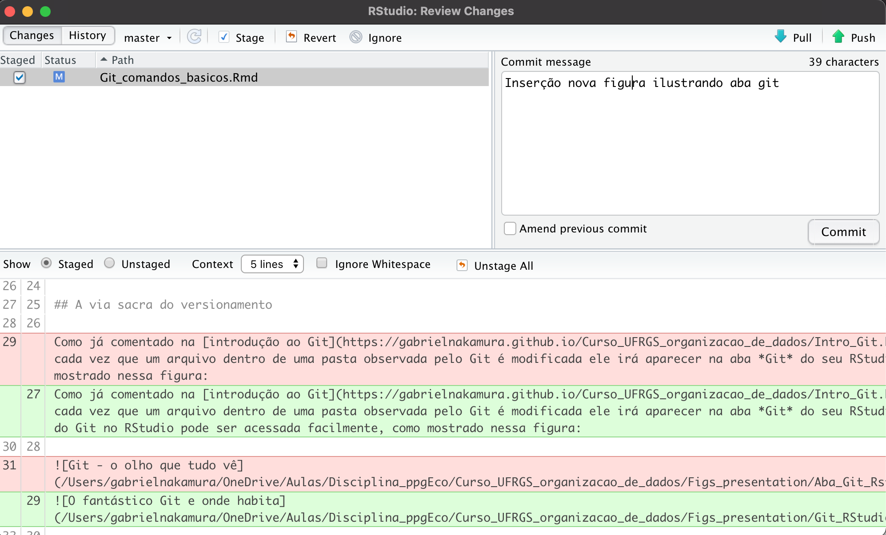

Comandos básicos do Git
Gabriel Nakamura
5/19/2021
Em cima, em baixo, Push e vai
Abre o computador, trabalha, modifica arquivo, salva o arquivo com um nome diferente do anterior, salva e atualiza a nuvem. Basicamente é isso que fazemos todos os dias, independente se você trabalha com taxonomia de bactérias ou com métodos quantitativos para taxonomia de bactérias. Basicamente, essa é a rotina de quem trabalha na frente do computador.
Todos esses passos são reproduzidos pelo Git de uma maneira muito mais eficiente, e ela pode ser resumida através dessas palavras: pull, diff, commit, push. Pronto, está completo o ciclo básico de operações necessárias para o controle eficiente de versões do seu projeto.
Apesar dessas ações apresentarem nomes próprios dentro do mundo do versionamento, quero que vejam que elas são bastante familiares, ou seja, fazemos operações de controle de versões quase todos os dias, porém de uma maneira menos eficiente e com menor controle. A grande diferença do uso de um sistema próprio de controle de versão, como o Git, é que ele permite que todos os passos destacados acima estejam sob o nosso controle, de maneira sistematizada e organizada. Em resumo, o Git não deixará você fazer nada que leve a uma cadeia de ações que leve o seu projeto ao caos como o dessa pasta, velha conhecida nossa, e que agora está fadada a ficar no passado:
Um diretório fadado a ficar no passado.
Todos os documentos que aparecerão nessa aba são documentos que vivem na pasta monitorada pelo Git (aprendemos como fazer isso na aula de introdução ao Git) e que foram modificados. A partir desse monitoramento é que começa nossa via sacra do versionamento.
A via sacra do versionamento
Como já comentado na introdução ao Git, cada vez que um arquivo dentro de uma pasta observada pelo Git é modificada ele irá aparecer na aba Git do seu RStudio. A aba do Git no RStudio pode ser acessada facilmente, como mostrado nessa figura:
O fantástico Git e onde habita
Precisamos aprender, basicamente, três funções básicas do Git para que possamos realizar o controle de versões em nossas pastas, que nesse momento devem estar bem organizadas. São elas:
1 - Pull atualiza o seu repositório local com o que tem no seu repositório remoto (GitHub), ou seja, sincronizasua a pasta presente no seu computador com tudo que tem na nuvem;
Antes de começar a fazer qualquer modificação nos nossos arquivos a primeira coisa a ser feita é sincronizar nosso repositório remoto com nosso repositório local. Para isso acessaremos o Git a partir do RStudio presente na nossa pasta do projeto que estamos trabalhando, como mostrado na figura a seguir:
Git - fazendo Pull
2 - Stage qualquer mudança realizada deve antes ser observada com cautela no nosso GitClient (RStudio), para que possasmos verificar as diferenças (diffs na linguagem do versionamento) entre a versão anterior e a atual, após as modificações realizadas. Fazer um stage significa selecionar o arquivo que fizemos as modificações, tal como mostrado na figura seguinte com um arquivo desse site que foi modificado em algum momento:
Git - staged um arquivo
Ao fazermos isso podemos clicar na opção Diff, que irá abrir uma nova aba mostrando as diferenças entre a versão antiga e a nova versão do documento modificado
 Olhar as diferenças é extremamente importante, pois são elas que possibilitarão indicar para o Git qual o commit que será feito, ou seja, dizer para o git o que foi modificado.
3 - Commit qualquer mudança realizada em qualquer arquivo, desde a menor vírgula até a mudança completa de seu repositório, deve ser acompanhada de um comentário breve destacando o que foi modificado, isso é o commit. Em outras palavras, é uma mensagem de texto para você mesmo, ou seus colaboradores, destacando o que foi modificado no repositório local observado pelo Git. O ideal é que o commit seja uma mensagem informativa e curta, não ultrapassando 40 palavras;
 Importante Evite fazer commits que não sejam informativos, por exemplo, fazer commits só por fazer, tente nunca fazer isso. Mensagens como modificação do arquivo, novo arquivo, arquivo_V1_novo, blablabla, fazem com que o potencial de controle que o Git nos oferece perder completamente o sentido.
4 - Push as modificações realizadas em seus arquivos estão só na sua máquina, ou seja, o repositório remoto (seu GitHub) está desatualizado. Para atualizá-lo devemos fazer um push, que nada mais é que sincronizar o repositório local com o repositório remoto.
Git - push, trabalho seguro no GitHub
Esta é a sequência básica para que possamos realizar um versionamento eficiente em nosso projeto. De certa forma a sequência é simples, e toda ela pode ser feita usando os recursos da interface que o RStudio nos oferece. Porém, alguns probleminhas podem surgir no meio dessas etapas descritas, por exemplo:
Fiz um commit, mas não deveria
O Git nos permite voltar no tempo de uma maneira muito eficiente